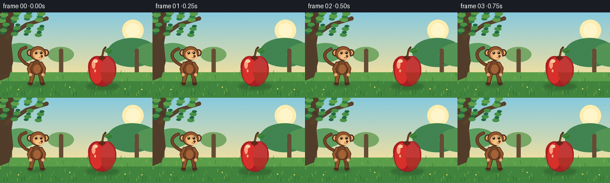
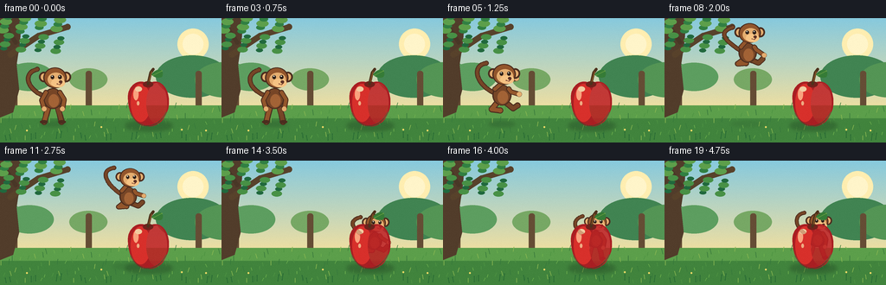
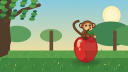
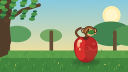
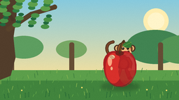

CODING AGENTS AS PIXEL WORLD MODELS
traex/GPT-5.6-Sol · dynamic_spatial_relationship_0055
点击播放 · 原生 RGB 像素
逐轮保存的候选
回放视频、检查图与代码变化。
每份候选均可单独播放。实际图片检查记录在下方工具轨迹中。
候选 01播放与检查图
点击播放 · 原生 RGB 像素


展开代码变化
--- 上一保存版本
+++ 本次保存版本
@@ -0,0 +1,221 @@
+from pathlib import Path
+import math
+import numpy as np
+from PIL import Image, ImageDraw, ImageFilter
+import artifact_io
+
+W, H, N, SS = 256, 144, 20, 4
+rng = np.random.default_rng(12)
+
+def sc(v): return int(round(v * SS))
+def box(b): return tuple(sc(x) for x in b)
+def P(points): return [(sc(x), sc(y)) for x, y in points]
+
+def ellipse(d, b, fill, outline=None, width=1):
+ d.ellipse(box(b), fill=fill, outline=outline, width=max(1, sc(width)))
+def line(d, pts, fill, width):
+ d.line(P(pts), fill=fill, width=sc(width), joint='curve')
+ r=width/2
+ for x,y in (pts[0],pts[-1]): ellipse(d,(x-r,y-r,x+r,y+r),fill)
+def cubic(p0,p1,p2,p3,n=25):
+ out=[]
+ for t in np.linspace(0,1,n):
+ u=1-t
+ out.append((u**3*p0[0]+3*u*u*t*p1[0]+3*u*t*t*p2[0]+t**3*p3[0],
+ u**3*p0[1]+3*u*u*t*p1[1]+3*u*t*t*p2[1]+t**3*p3[1]))
+ return out
+
+def background(i):
+ # warm, painterly orchard with a stable camera
+ yy=np.arange(H*SS)[:,None]
+ top=np.array([135,202,222.]); bot=np.array([247,225,157.])
+ a=np.clip(yy/(H*SS*.78),0,1)[...,None]
+ arr=np.broadcast_to(top*(1-a)+bot*a,(H*SS,W*SS,3)).copy()
+ im=Image.fromarray(np.uint8(arr),'RGB')
+ d=ImageDraw.Draw(im)
+ # distant sun and atmospheric haze
+ ellipse(d,(205,12,241,48),(255,238,177))
+ ellipse(d,(211,18,235,42),(255,245,202))
+ # distant rounded orchard crowns
+ for x,y,r,c in [(-8,64,35,(82,145,92)),(34,67,28,(93,158,96)),(222,66,42,(65,132,82)),
+ (260,70,35,(84,149,85)),(102,70,22,(119,168,101))]:
+ ellipse(d,(x-r,y-r*.55,x+r,y+r*.62),c)
+ # distant trunks
+ for x in (16,102,229):
+ d.rounded_rectangle(box((x-3,61,x+4,121)),radius=sc(3),fill=(101,77,53))
+ # grass gradient bands
+ d.rectangle(box((0,101,256,144)),fill=(92,159,75))
+ d.rectangle(box((0,116,256,144)),fill=(65,132,61))
+ # soft bands / blades
+ for k in range(95):
+ x=(k*37+11)%256; y=103+(k*19)%40
+ col=[(111,177,78),(78,147,66),(138,184,82),(55,121,60)][k%4]
+ lean=((k%5)-2)*.8
+ line(d,[(x,y),(x+lean,y-3-(k%4))],col,.7)
+ # framing trunk at far left
+ poly=[(0,0),(25,0),(23,27),(19,54),(22,83),(15,109),(0,115)]
+ d.polygon(P(poly),fill=(82,61,43))
+ line(d,[(12,42),(45,20),(78,10)],(88,66,43),7)
+ line(d,[(18,28),(5,8)],(73,55,39),5)
+ # canopy, gently changing leaf positions
+ leaf_cols=[(33,105,62),(49,128,67),(72,145,70),(93,159,75)]
+ for k in range(42):
+ x=(k*41)%102-18 + math.sin(i*.25+k)*.35
+ y=(k*23)%47-8 + math.cos(i*.23+k)*.25
+ r=4+(k%4)
+ ellipse(d,(x-r,y-r*.55,x+r,y+r*.55),leaf_cols[k%4])
+ # tiny background flowers
+ for x in (31,117,210,238):
+ y=126+(x%9)
+ ellipse(d,(x-1,y-1,x+1,y+1),(244,220,103))
+ return im
+
+def draw_shadow(base,cx,fy,scale,air):
+ ov=Image.new('RGBA',base.size,(0,0,0,0)); d=ImageDraw.Draw(ov)
+ rx=(15+air*6)*scale; alpha=int(70*(1-.55*air))
+ ellipse(d,(cx-rx,fy+1,cx+rx,fy+6),(32,74,43,alpha))
+ ov=ov.filter(ImageFilter.GaussianBlur(sc(2.1)))
+ base.paste(ov,(0,0),ov)
+
+def draw_monkey(base,cx,fy,s,jump_t,frame):
+ """Warm storybook monkey. Coordinates are anchored at the feet."""
+ ov=Image.new('RGBA',base.size,(0,0,0,0)); d=ImageDraw.Draw(ov)
+ def tr(p): return (cx+p[0]*s, fy+p[1]*s)
+ fur=(119,70,39,255); dark=(76,45,31,255); fur2=(147,86,44,255)
+ tan=(229,174,112,255); tan2=(246,195,132,255)
+ # jump_t 0 on ground, near 1 while airborne; animate running silhouette
+ j=jump_t
+ swing=math.sin(frame*.95)
+ # long expressive tail, behind body
+ tail=cubic(tr((-8,-29)),tr((-31,-37-8*j)),tr((-35,-57+5*swing)),tr((-18,-61+3*swing)),34)
+ line(d,tail,dark,5.5*s)
+ tail2=cubic(tr((-8,-29)),tr((-31,-37-8*j)),tr((-35,-57+5*swing)),tr((-18,-61+3*swing)),34)
+ line(d,tail2,fur,3.5*s)
+ # back leg / rear foot
+ if j>.15:
+ hip=tr((-5,-19)); knee=tr((-12,-9-5*j)); foot=tr((-2,-7-8*j))
+ line(d,[hip,knee,foot],dark,7*s); line(d,[hip,knee,foot],fur2,4.8*s)
+ # front leg tucked forward
+ hip2=tr((5,-18)); knee2=tr((13,-10-5*j)); foot2=tr((18,-13-7*j))
+ line(d,[hip2,knee2,foot2],dark,7*s); line(d,[hip2,knee2,foot2],fur,4.8*s)
+ else:
+ # planted legs, subtle walking/landing bend
+ crouch=max(0, -swing)*1.5
+ line(d,[tr((-5,-18)),tr((-8,-7)),tr((-10+1.5*swing,0))],dark,7*s)
+ line(d,[tr((-5,-18)),tr((-8,-7)),tr((-10+1.5*swing,0))],fur2,4.8*s)
+ line(d,[tr((5,-18)),tr((8,-8)),tr((10-1.5*swing,0))],dark,7*s)
+ line(d,[tr((5,-18)),tr((8,-8)),tr((10-1.5*swing,0))],fur,4.8*s)
+ ellipse(d,(cx+(-15+1.5*swing)*s,fy-2*s,cx+(-6+1.5*swing)*s,fy+2*s),dark)
+ ellipse(d,(cx+(6-1.5*swing)*s,fy-2*s,cx+(15-1.5*swing)*s,fy+2*s),dark)
+ # pear-like torso
+ ellipse(d,(cx-11*s,fy-39*s,cx+11*s,fy-15*s),dark)
+ ellipse(d,(cx-9.5*s,fy-38*s,cx+9.5*s,fy-16*s),fur)
+ ellipse(d,(cx-5*s,fy-32*s,cx+7*s,fy-17*s),(163,99,54,255))
+ # arms change into a forward diving pose
+ shL=tr((-8,-34)); shR=tr((8,-34))
+ if j>.12:
+ # both arms reach toward destination
+ e1=tr((4,-43-5*j)); h1=tr((17,-44-8*j))
+ e2=tr((10,-31)); h2=tr((20,-26+2*swing))
+ else:
+ e1=tr((-13,-25)); h1=tr((-10,-15))
+ e2=tr((13,-26)); h2=tr((11,-15))
+ for a,b,c in [(shL,e1,h1),(shR,e2,h2)]:
+ line(d,[a,b,c],dark,6*s); line(d,[a,b,c],fur2,4*s)
+ ellipse(d,(c[0]-2.7*s,c[1]-2.7*s,c[0]+2.7*s,c[1]+2.7*s),tan)
+ # ears behind head
+ hx=cx+2*s; hy=fy-49*s
+ ellipse(d,(hx-18*s,hy-9*s,hx-7*s,hy+3*s),dark)
+ ellipse(d,(hx+8*s,hy-9*s,hx+19*s,hy+3*s),dark)
+ ellipse(d,(hx-16*s,hy-7*s,hx-9*s,hy+1*s),tan)
+ ellipse(d,(hx+10*s,hy-7*s,hx+17*s,hy+1*s),tan)
+ # head cap and face
+ ellipse(d,(hx-13*s,hy-14*s,hx+14*s,hy+10*s),dark)
+ ellipse(d,(hx-11.5*s,hy-13*s,hx+12.5*s,hy+9*s),fur2)
+ # brow/face mask, looking right
+ ellipse(d,(hx-8*s,hy-8*s,hx+11*s,hy+8*s),tan)
+ ellipse(d,(hx-4*s,hy-1*s,hx+12*s,hy+9*s),tan2)
+ # eyes with tiny glints
+ ellipse(d,(hx-4.5*s,hy-5*s,hx-.5*s,hy-.5*s),(45,31,25,255))
+ ellipse(d,(hx+4*s,hy-5.2*s,hx+8.2*s,hy-.4*s),(45,31,25,255))
+ ellipse(d,(hx-3.5*s,hy-4.5*s,hx-2.2*s,hy-3.2*s),(255,255,236,255))
+ ellipse(d,(hx+5*s,hy-4.6*s,hx+6.3*s,hy-3.3*s),(255,255,236,255))
+ # nose and cheerful mouth
+ ellipse(d,(hx+5*s,hy+1*s,hx+9*s,hy+4.2*s),(92,51,38,255))
+ line(d,[tr((5,-44)),tr((8,-43)),tr((10,-45))],(106,49,39,255),.8*s)
+ base.paste(ov,(0,0),ov)
+
+def apple_layer(base):
+ # shadow is fixed, reinforcing that the apple is on the ground and foreground
+ sh=Image.new('RGBA',base.size,(0,0,0,0)); sd=ImageDraw.Draw(sh)
+ ellipse(sd,(145,119,199,130),(31,68,35,90)); sh=sh.filter(ImageFilter.GaussianBlur(sc(2.3)))
+ base.paste(sh,(0,0),sh)
+ ov=Image.new('RGBA',base.size,(0,0,0,0)); d=ImageDraw.Draw(ov)
+ # smooth apple silhouette from cubic curves
+ pts=[]
+ pts += cubic((171,76),(160,68),(145,79),(148,96),18)
+ pts += cubic((148,96),(149,115),(160,126),(170,125),18)[1:]
+ pts += cubic((170,125),(181,128),(196,113),(195,96),18)[1:]
+ pts += cubic((195,96),(195,79),(183,68),(171,76),18)[1:]
+ d.polygon(P(pts),fill=(169,31,35,255))
+ # warmer lit lobe and dark bottom glaze
+ ellipse(d,(151,76,174,120),(216,48,43,255))
+ ellipse(d,(169,75,193,122),(190,31,36,220))
+ # redraw a subtle lower contour
+ arcpts=cubic((151,110),(158,127),(180,132),(192,109),22)
+ line(d,arcpts,(128,26,35,150),1.2)
+ # dimple, stem, leaf
+ ellipse(d,(165,73,177,80),(112,35,29,255))
+ line(d,[(171,76),(174,63),(177,59)],(78,50,29,255),3.2)
+ line(d,[(172,73),(175,62)],(129,82,37,255),1.2)
+ leaf=cubic((175,65),(182,56),(191,59),(187,68),15)+cubic((187,68),(182,70),(177,68),(175,65),12)[1:]
+ d.polygon(P(leaf),fill=(54,124,55,255))
+ line(d,[(177,66),(187,61)],(111,166,67,255),.8)
+ # glossy highlights
+ ellipse(d,(154,81,160,95),(255,151,117,210))
+ ellipse(d,(156,79,164,85),(255,198,155,175))
+ ellipse(d,(158,96,161,101),(247,114,93,120))
+ base.paste(ov,(0,0),ov)
+
+def state(i):
+ # Readable opening, anticipation, one clean parabolic jump, then settled behind apple.
+ if i <= 3:
+ return 61 + .5*math.sin(i*.8), 120, 1.0, 0.0
+ if i == 4: return 63, 121, 1.0, .05
+ if i == 5: return 68, 116, 1.0, .28
+ if 6 <= i <= 14:
+ u=(i-5)/9.0
+ x=68+(176-68)*(3*u*u-2*u*u*u)
+ foot=116-58*math.sin(math.pi*u)
+ return x,foot,1.0-.14*u,.92
+ if i == 15: return 176,105,.84,.30
+ if i == 16: return 176,113,.82,.08
+ # gentle landing settle; center-aligned and mostly hidden by apple
+ return 176+math.sin(i*.8)*.35,112+(.8 if i==17 else 0),.82,0.0
+
+def make_frames():
+ frames=[]
+ for i in range(N):
+ im=background(i)
+ cx,fy,s,j=state(i)
+ air=max(0,min(1,(116-fy)/58))
+ draw_shadow(im,cx,119,s,air)
+ # Monkey is always rendered before the apple; overlap during/finally clearly means "behind".
+ draw_monkey(im,cx,fy,s,j,i)
+ apple_layer(im)
+ # subtle foreground grass tips add depth without covering the action
+ d=ImageDraw.Draw(im)
+ for k in range(18):
+ x=(k*29+7)%256; y=141-(k%4)
+ line(d,[(x,y),(x+(k%3)-1,y-5-(k%3))],(39,105,52),.8)
+ # high quality antialias then very light film grain
+ im=im.resize((W,H),Image.Resampling.LANCZOS)
+ arr=np.array(im).astype(np.int16)
+ noise=rng.normal(0,.55,(H,W,1))
+ arr=np.clip(arr+noise,0,255).astype(np.uint8)
+ frames.append(arr)
+ return np.stack(frames)
+
+if __name__ == '__main__':
+ case_dir=Path(__file__).resolve().parent
+ artifact_io.save(make_frames(),case_dir)
可观测工具轨迹
实际执行的命令与返回图片。
命令 1exit 0
/bin/bash -lc "cat prompt.txt && printf '\\n---RULES---\\n' && cat GENERATION_RULES.md && printf '\\n---SPEC---\\n' && cat task_spec.json"
命令 2exit 0
/bin/bash -lc "find . -maxdepth 2 -type f -printf '%p\\n' | sort"
命令 3exit 0
/bin/bash -lc 'cat artifact_io.py'
命令 4exit 0
/bin/bash -lc "cat > generate.py <<'PY'
from pathlib import Path
import math
import numpy as np
from PIL import Image, ImageDraw, ImageFilter
import artifact_io
W, H, N, SS = 256, 144, 20, 4
rng = np.random.default_rng(12)
def sc(v): return int(round(v * SS))
def box(b): return tuple(sc(x) for x in b)
def P(points): return [(sc(x), sc(y)) for x, y in points]
def ellipse(d, b, fill, outline=None, width=1):
d.ellipse(box(b), fill=fill, outline=outline, width=max(1, sc(width)))
def line(d, pts, fill, width):
d.line(P(pts), fill=fill, width=sc(width), joint='curve')
r=width/2
for x,y in (pts[0],pts[-1]): ellipse(d,(x-r,y-r,x+r,y+r),fill)
def cubic(p0,p1,p2,p3,n=25):
out=[]
for t in np.linspace(0,1,n):
u=1-t
out.append((u**3*p0[0]+3*u*u*t*p1[0]+3*u*t*t*p2[0]+t**3*p3[0],
u**3*p0[1]+3*u*u*t*p1[1]+3*u*t*t*p2[1]+t**3*p3[1]))
return out
def background(i):
# warm, painterly orchard with a stable camera
yy=np.arange(H*SS)[:,None]
top=np.array([135,202,222.]); bot=np.array([247,225,157.])
a=np.clip(yy/(H*SS*.78),0,1)[...,None]
arr=np.broadcast_to(top*(1-a)+bot*a,(H*SS,W*SS,3)).copy()
im=Image.fromarray(np.uint8(arr),'RGB')
d=ImageDraw.Draw(im)
# distant sun and atmospheric haze
ellipse(d,(205,12,241,48),(255,238,177))
ellipse(d,(211,18,235,42),(255,245,202))
# distant rounded orchard crowns
for x,y,r,c in [(-8,64,35,(82,145,92)),(34,67,28,(93,158,96)),(222,66,42,(65,132,82)),
(260,70,35,(84,149,85)),(102,70,22,(119,168,101))]:
ellipse(d,(x-r,y-r*.55,x+r,y+r*.62),c)
# distant trunks
for x in (16,102,229):
d.rounded_rectangle(box((x-3,61,x+4,121)),radius=sc(3),fill=(101,77,53))
# grass gradient bands
d.rectangle(box((0,101,256,144)),fill=(92,159,75))
d.rectangle(box((0,116,256,144)),fill=(65,132,61))
# soft bands / blades
for k in range(95):
x=(k*37+11)%256; y=103+(k*19)%40
col=[(111,177,78),(78,147,66),(138,184,82),(55,121,60)][k%4]
lean=((k%5)-2)*.8
line(d,[(x,y),(x+lean,y-3-(k%4))],col,.7)
# framing trunk at far left
poly=[(0,0),(25,0),(23,27),(19,54),(22,83),(15,109),(0,115)]
d.polygon(P(poly),fill=(82,61,43))
line(d,[(12,42),(45,20),(78,10)],(88,66,43),7)
line(d,[(18,28),(5,8)],(73,55,39),5)
# canopy, gently changing leaf positions
leaf_cols=[(33,105,62),(49,128,67),(72,145,70),(93,159,75)]
for k in range(42):
x=(k*41)%102-18 + math.sin(i*.25+k)*.35
y=(k*23)%47-8 + math.cos(i*.23+k)*.25
r=4+(k%4)
ellipse(d,(x-r,y-r*.55,x+r,y+r*.55),leaf_cols[k%4])
# tiny background flowers
for x in (31,117,210,238):
y=126+(x%9)
ellipse(d,(x-1,y-1,x+1,y+1),(244,220,103))
return im
def draw_shadow(base,cx,fy,scale,air):
ov=Image.new('RGBA',base.size,(0,0,0,0)); d=ImageDraw.Draw(ov)
rx=(15+air*6)*scale; alpha=int(70*(1-.55*air))
ellipse(d,(cx-rx,fy+1,cx+rx,fy+6),(32,74,43,alpha))
ov=ov.filter(ImageFilter.GaussianBlur(sc(2.1)))
base.paste(ov,(0,0),ov)
def draw_monkey(base,cx,fy,s,jump_t,frame):
\"\"\"Warm storybook monkey. Coordinates are anchored at the feet.\"\"\"
ov=Image.new('RGBA',base.size,(0,0,0,0)); d=ImageDraw.Draw(ov)
def tr(p): return (cx+p[0]*s, fy+p[1]*s)
fur=(119,70,39,255); dark=(76,45,31,255); fur2=(147,86,44,255)
tan=(229,174,112,255); tan2=(246,195,132,255)
# jump_t 0 on ground, near 1 while airborne; animate running silhouette
j=jump_t
swing=math.sin(frame*.95)
# long expressive tail, behind body
tail=cubic(tr((-8,-29)),tr((-31,-37-8*j)),tr((-35,-57+5*swing)),tr((-18,-61+3*swing)),34)
line(d,tail,dark,5.5*s)
tail2=cubic(tr((-8,-29)),tr((-31,-37-8*j)),tr((-35,-57+5*swing)),tr((-18,-61+3*swing)),34)
line(d,tail2,fur,3.5*s)
# back leg / rear foot
if j>.15:
hip=tr((-5,-19)); knee=tr((-12,-9-5*j)); foot=tr((-2,-7-8*j))
line(d,[hip,knee,foot],dark,7*s); line(d,[hip,knee,foot],fur2,4.8*s)
# front leg tucked forward
hip2=tr((5,-18)); knee2=tr((13,-10-5*j)); foot2=tr((18,-13-7*j))
line(d,[hip2,knee2,foot2],dark,7*s); line(d,[hip2,knee2,foot2],fur,4.8*s)
else:
# planted legs, subtle walking/landing bend
crouch=max(0, -swing)*1.5
line(d,[tr((-5,-18)),tr((-8,-7)),tr((-10+1.5*swing,0))],dark,7*s)
line(d,[tr((-5,-18)),tr((-8,-7)),tr((-10+1.5*swing,0))],fur2,4.8*s)
line(d,[tr((5,-18)),tr((8,-8)),tr((10-1.5*swing,0))],dark,7*s)
line(d,[tr((5,-18)),tr((8,-8)),tr((10-1.5*swing,0))],fur,4.8*s)
ellipse(d,(cx+(-15+1.5*swing)*s,fy-2*s,cx+(-6+1.5*swing)*s,fy+2*s),dark)
ellipse(d,(cx+(6-1.5*swing)*s,fy-2*s,cx+(15-1.5*swing)*s,fy+2*s),dark)
# pear-like torso
ellipse(d,(cx-11*s,fy-39*s,cx+11*s,fy-15*s),dark)
ellipse(d,(cx-9.5*s,fy-38*s,cx+9.5*s,fy-16*s),fur)
ellipse(d,(cx-5*s,fy-32*s,cx+7*s,fy-17*s),(163,99,54,255))
# arms change into a forward diving pose
shL=tr((-8,-34)); shR=tr((8,-34))
if j>.12:
# both arms reach toward destination
e1=tr((4,-43-5*j)); h1=tr((17,-44-8*j))
e2=tr((10,-31)); h2=tr((20,-26+2*swing))
else:
e1=tr((-13,-25)); h1=tr((-10,-15))
e2=tr((13,-26)); h2=tr((11,-15))
for a,b,c in [(shL,e1,h1),(shR,e2,h2)]:
line(d,[a,b,c],dark,6*s); line(d,[a,b,c],fur2,4*s)
ellipse(d,(c[0]-2.7*s,c[1]-2.7*s,c[0]+2.7*s,c[1]+2.7*s),tan)
# ears behind head
hx=cx+2*s; hy=fy-49*s
ellipse(d,(hx-18*s,hy-9*s,hx-7*s,hy+3*s),dark)
ellipse(d,(hx+8*s,hy-9*s,hx+19*s,hy+3*s),dark)
ellipse(d,(hx-16*s,hy-7*s,hx-9*s,hy+1*s),tan)
ellipse(d,(hx+10*s,hy-7*s,hx+17*s,hy+1*s),tan)
# head cap and face
ellipse(d,(hx-13*s,hy-14*s,hx+14*s,hy+10*s),dark)
ellipse(d,(hx-11.5*s,hy-13*s,hx+12.5*s,hy+9*s),fur2)
# brow/face mask, looking right
ellipse(d,(hx-8*s,hy-8*s,hx+11*s,hy+8*s),tan)
ellipse(d,(hx-4*s,hy-1*s,hx+12*s,hy+9*s),tan2)
# eyes with tiny glints
ellipse(d,(hx-4.5*s,hy-5*s,hx-.5*s,hy-.5*s),(45,31,25,255))
ellipse(d,(hx+4*s,hy-5.2*s,hx+8.2*s,hy-.4*s),(45,31,25,255))
ellipse(d,(hx-3.5*s,hy-4.5*s,hx-2.2*s,hy-3.2*s),(255,255,236,255))
ellipse(d,(hx+5*s,hy-4.6*s,hx+6.3*s,hy-3.3*s),(255,255,236,255))
# nose and cheerful mouth
ellipse(d,(hx+5*s,hy+1*s,hx+9*s,hy+4.2*s),(92,51,38,255))
line(d,[tr((5,-44)),tr((8,-43)),tr((10,-45))],(106,49,39,255),.8*s)
base.paste(ov,(0,0),ov)
def apple_layer(base):
# shadow is fixed, reinforcing that the apple is on the ground and foreground
sh=Image.new('RGBA',base.size,(0,0,0,0)); sd=ImageDraw.Draw(sh)
ellipse(sd,(145,119,199,130),(31,68,35,90)); sh=sh.filter(ImageFilter.GaussianBlur(sc(2.3)))
base.paste(sh,(0,0),sh)
ov=Image.new('RGBA',base.size,(0,0,0,0)); d=ImageDraw.Draw(ov)
# smooth apple silhouette from cubic curves
pts=[]
pts += cubic((171,76),(160,68),(145,79),(148,96),18)
pts += cubic((148,96),(149,115),(160,126),(170,125),18)[1:]
pts += cubic((170,125),(181,128),(196,113),(195,96),18)[1:]
pts += cubic((195,96),(195,79),(183,68),(171,76),18)[1:]
d.polygon(P(pts),fill=(169,31,35,255))
# warmer lit lobe and dark bottom glaze
ellipse(d,(151,76,174,120),(216,48,43,255))
ellipse(d,(169,75,193,122),(190,31,36,220))
# redraw a subtle lower contour
arcpts=cubic((151,110),(158,127),(180,132),(192,109),22)
line(d,arcpts,(128,26,35,150),1.2)
# dimple, stem, leaf
ellipse(d,(165,73,177,80),(112,35,29,255))
line(d,[(171,76),(174,63),(177,59)],(78,50,29,255),3.2)
line(d,[(172,73),(175,62)],(129,82,37,255),1.2)
leaf=cubic((175,65),(182,56),(191,59),(187,68),15)+cubic((187,68),(182,70),(177,68),(175,65),12)[1:]
d.polygon(P(leaf),fill=(54,124,55,255))
line(d,[(177,66),(187,61)],(111,166,67,255),.8)
# glossy highlights
ellipse(d,(154,81,160,95),(255,151,117,210))
ellipse(d,(156,79,164,85),(255,198,155,175))
ellipse(d,(158,96,161,101),(247,114,93,120))
base.paste(ov,(0,0),ov)
def state(i):
# Readable opening, anticipation, one clean parabolic jump, then settled behind apple.
if i <= 3:
return 61 + .5*math.sin(i*.8), 120, 1.0, 0.0
if i == 4: return 63, 121, 1.0, .05
if i == 5: return 68, 116, 1.0, .28
if 6 <= i <= 14:
u=(i-5)/9.0
x=68+(176-68)*(3*u*u-2*u*u*u)
foot=116-58*math.sin(math.pi*u)
return x,foot,1.0-.14*u,.92
if i == 15: return 176,105,.84,.30
if i == 16: return 176,113,.82,.08
# gentle landing settle; center-aligned and mostly hidden by apple
return 176+math.sin(i*.8)*.35,112+(.8 if i==17 else 0),.82,0.0
def make_frames():
frames=[]
for i in range(N):
im=background(i)
cx,fy,s,j=state(i)
air=max(0,min(1,(116-fy)/58))
draw_shadow(im,cx,119,s,air)
# Monkey is always rendered before the apple; overlap during/finally clearly means \"behind\".
draw_monkey(im,cx,fy,s,j,i)
apple_layer(im)
# subtle foreground grass tips add depth without covering the action
d=ImageDraw.Draw(im)
for k in range(18):
x=(k*29+7)%256; y=141-(k%4)
line(d,[(x,y),(x+(k%3)-1,y-5-(k%3))],(39,105,52),.8)
# high quality antialias then very light film grain
im=im.resize((W,H),Image.Resampling.LANCZOS)
arr=np.array(im).astype(np.int16)
noise=rng.normal(0,.55,(H,W,1))
arr=np.clip(arr+noise,0,255).astype(np.uint8)
frames.append(arr)
return np.stack(frames)
if __name__ == '__main__':
case_dir=Path(__file__).resolve().parent
artifact_io.save(make_frames(),case_dir)
PY
python generate.py
python - <<'PY'
import numpy as np
z=np.load('pixels.npz')['pixels']
print(z.shape,z.dtype, 'frames differ', [int(np.sum(z[:,:,i]"'!=z[:,:,i-1])) for i in range(1,20)])
PY'视觉工具实际返回图片 1

视觉工具实际返回图片 2

视觉工具实际返回图片 3

视觉工具实际返回图片 4

保存候选 1 份；完成命令 4 次；可验证图片返回 4 张。原始 API 响应与完整日志保留在本地。